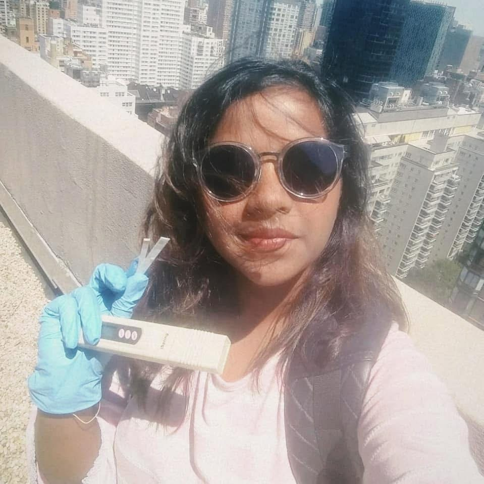

Executive dashboard
Data driven improvement through KPI governance
Built dashboards and compliance tracking systems that increased visibility, accelerated corrective action closure, and supported leadership decision making.
Director-Level EHS Portfolio
Strategic Environmental, Health & Safety leader with 8+ years of experience strengthening regulatory governance, environmental compliance, incident prevention, and sustainable operations across pharmaceutical, healthcare, laboratory, construction, and manufacturing environments.
Environmental Compliance | Risk Governance | Sustainability Programs | Operational Excellence | Continuous Improvement


About
I am a strategic Environmental, Health and Safety leader with over 8 years of progressive experience supporting regulated manufacturing and operational environments. My background is rooted in building scalable environmental compliance systems across complex operations including air permitting, hazardous waste management, stormwater compliance, regulatory reporting, and audit governance.
In my recent role, I partnered directly with plant and operations leadership to standardize environmental programs, close audit gaps, and implement data driven KPI dashboards that improved compliance visibility and reduced regulatory risk exposure. I have led multi departmental initiatives, supported agency inspections, and driven corrective actions to closure while maintaining operational continuity.
What differentiates me is my ability to translate regulatory requirements into operationally executable systems. I focus heavily on root cause analysis, risk forecasting, and building sustainable controls. I naturally align with ownership, diving deep into data, earning trust across teams, and delivering measurable results.
Impact snapshot
Built dashboards and compliance tracking systems that increased visibility, accelerated corrective action closure, and supported leadership decision making.
Achieved through stronger chemical hygiene controls, training, inspections, and lifecycle governance.
Delivered through emergency preparedness, committee engagement, and safety awareness initiatives.
Improved segregation discipline and leadership visibility through environmental KPI tracking.
Elevated contractor and field compliance through PPE discipline and stronger program implementation.
Reduced manufacturing risk through JHAs, incident investigations, and ISO aligned document updates.
Business value
I work closely with government and regulatory bodies including OSHA, EPA, RCRA, DOT, DEQ, and FDA to strengthen compliance posture and inspection readiness.
I use Lean Six Sigma Yellow Belt techniques including 5 Whys, fishbone analysis, and root cause analysis to move from recurring findings to sustainable controls.
I partner with operations, engineering, QA, manufacturing, facilities, and leadership teams to align EHS expectations with practical site execution.
Strategic impact and case studies
Laboratory teams were operating with uneven chemical storage, PPE, and documentation practices, while historical data showed about 14 chemical exposure incidents annually.
Redesigned the Chemical Hygiene Program, standardized handling procedures, upgraded emergency response guidance, launched training, introduced routine inspections, and implemented exposure tracking metrics.
Reduced exposure incidents from about 14 to 11 annually, a 21% reduction, while improving consistency and regulatory discipline across laboratory operations.
Methods used: root cause analysis, inspections, KPI tracking, corrective action management
Waste handling documentation and segregation practices varied by department, creating compliance exposure while the facility generated about 180 tons of waste annually.
Conducted an environmental audit, standardized segregation procedures, built a KPI dashboard for waste and recycling trends, and introduced routine inspections with operations and engineering alignment.
Reduced waste generation from about 180 tons to 160 tons annually, an 11% improvement, while giving leadership clearer visibility into environmental performance.
Methods used: KPI dashboarding, process standardization, inspections, cross-functional collaboration
The clinic was experiencing about 20 workplace safety incidents per quarter across slips, ergonomic injuries, and minor patient-care related incidents.
Analyzed incident reports, implemented hazard identification training, organized emergency drills, strengthened safety committee engagement, and launched clinic-wide awareness campaigns.
Reduced incidents from about 20 to 13 per quarter, a 35% reduction, while increasing staff engagement and reinforcing a stronger safety culture.
Methods used: trend analysis, training, emergency preparedness, engagement campaigns
Credentials
Click any credential to open the certificate.
Career journey
Environmental, Health & Safety Manager driving site governance, environmental compliance, hazardous waste programs, and operational risk reduction.
Chemical Hygiene Officer leading laboratory EHS strategy, inspections, exposure control, and corrective action discipline.
Safety Officer strengthening healthcare safety programs, committee governance, and emergency preparedness.
Environmental compliance and manufacturing safety work spanning contractor oversight, risk assessment, KPI reporting, and incident analysis.
Continuous improvement, environmental compliance support, process discipline, and fieldwork in client-facing environments.
I build practical systems that reduce risk, hold up under regulatory scrutiny, and remain usable for operations teams. My approach combines clear governance, field engagement, and disciplined follow-through.

Combining technical depth with stakeholder communication, leadership partnership, and site credibility.
Professional gallery

Contact
I welcome conversations regarding Senior EHS Manager, Director level EHS, Regional HSE, Project Management, Environmental Compliance, and Sustainability roles.